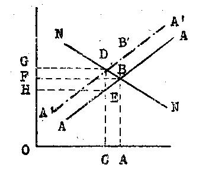
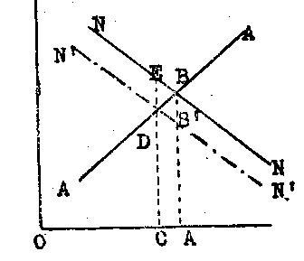
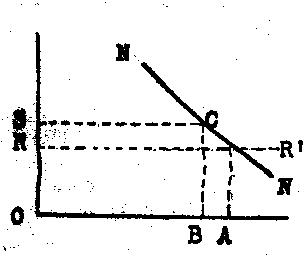
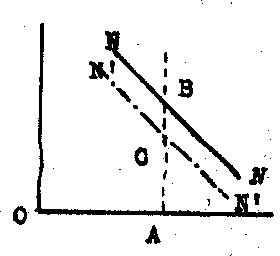
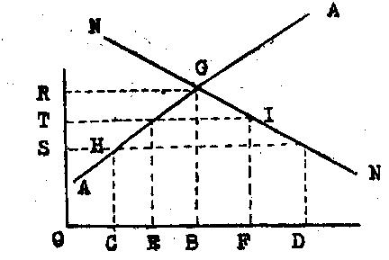

Librairie de Médicis — 1948 (deuxième édition)
par Richard von Strigl
traduit par P. Ochwald
Pour commencer, nous décrirons ce que sont en réalité les charges sur les prix en étudiant le transfert de l'impôt. Nous traiterons le cas où l'offre concernant tout objet vendu supporte un impôt, et ensuite le cas où chaque acheteur, pour chaque achat, doit payer un impôt.
1. Pour une forme donnée de l'offre (AA) et de la demande (NN), le prix en marché libre serait AB, la grandeur de ce qui est vendu OA (figure 14). Après avoir ajouté l'impôt que le vendeur a à supporter (charge de l'offre), la quantité OA ne pourrait plus être offerte que pour le prix AB', augmenté du montant de l'impôt. Comme pour ce prix, la quantité produite OA n'est plus prise par la demande, la production et la vente doivent être réduites, et cela dans une proportion telle que le prix, augmenté de l'impôt, répondre à ce que la demande sera disposée à payer. (Quantité produite OC, prix brut CD, rentrée nette pour le vendeur CE, impôt DE) L'impôt a eu pour résultat la formation d'une nouvelle courbe d'offres A'A' qui, par rapport à la précédente, est déplacée vers la gauche et qui est désormais basée sur les nouveaux frais de production (impôt compris).

Fig. 14. — Charge sur l'offre.
2. La charge d'un impôt que l'acheteur doit acquitter aura pour effet que la quantité OA, qui jusqu'à présent était absorbée par la demande au prix AB (figure 15), ne le serait plus que pour le prix (net) AB', diminué du montant de la taxe. Mais comme pour ce prix on ne livrera qu'une quantité plus petite, la production doit être réduite. le nouvel équilibre se réalisera pour la quantité produite au point où la courbe de l'offre coupe une nouvelle courbe de la demande (N'N'), représentant le prix net que la demande est disposée à payer au vendeur (elle représente en fait l'offre en prix que la demande faisait jusqu'alors, diminuée du montant de la taxe). La charge de l'acheteur est dès lors CE ; le vendeur touchera un prix net CD, tandis que DE représente le montant de l'impôt par objet vendu. L'introduction de la charge par impôts sur la demande agit donc comme un déplacement de la courbe des demandes vers la gauche.

Fig. 15. — Charge sur la demande.
Nous résumerons ainsi ce qui résulte de la translation des impôts. En principe, l'effet est le même dans les deux cas exposés. La vente diminue, les rentrées encaissées par l'offre sont plus faibles (si l'offre est chargée, il s'agit de la rentrée nette à envisager), le prix que la demande aura à supporter augmente (si la demande est taxée, ce sera un prix brut). On peut aussi voir immédiatement sur les figures que la réduction de la vente sera de grandeur différente, suivant l'inclinaison de la courbe dans une partie assez considérable de son tracé. 5plus une courbe a une pente raide, et moins le recul de la vente sera fort.) Mais à côté du recul de la vente, l'action de l'impôt sera encore une modification de la répartition de tout le produit. Ce fait fort important doit être traité avec quelque détail.
Admettons qu'un impôt de l'espèce indiquée, un impôt qui agit "en augmentant les coûts" et qui, par conséquent, est une "charge sur les prix", soit introduit de façon uniforme dans toutes les productions, comme ce serait le cas pour un impôt général sur le chiffre d'affaires. Admettons d'autre part — afin de voir plus distinctement le déplacement dans la répartition du "produit social", — que toute la production en biens de consommation est achetée par le commerce, et qu'elle est ensuite vendue à ceux qui ont un revenu quelconque. Si pour commencer nous observons la répartition telle qu'elle avait lieu avant l'introduction de l'impôt, il est clair que tous ceux qui sont d'une façon quelconque occupés à la production et qui en retirent un revenu (y compris les entrepreneurs, etc.), achètent le produit. Le produit, dans la quantité OA (figure 14), a été vendu au prix AB, et ce qu'on en a retiré, de grandeur OABF, est devenu revenu. Après institution de l'impôt, la rentrée totale qu'on obtient pour le produit OC (diminué), pour le prix brut CD (élevé), sera OCDG : De ce produit total, une partie, OCEH, est devenue un revenu pour ceux qui, à des titres divers, prennent part à la production, tandis que le reste DEGH devient "revenu" de l'État, qui prélève l'impôt. Le commerce, qui répartit les biens réels entre ceux qui encaissent des revenus, suivant ce qu'ils ont touché de la production, trouve maintenant l'État à côté de ceux qui touchent des revenus ; l'État revendique une partie de ces biens, tandis qu'auparavant le produit total était réparti entre ceux qui touchaient des revenus gagnés dans la production. (La figure 14 peut être considérée comme représentant la répartition de toute la production, puisque, comme nous l'avons supposé, la répartition de chaque produit se fait suivant ce principe. En cas de "charge de la demande", il se passe la même chose que dans le cas de la "charge de l'offre", seule représentée dans cette figure.) Nous obtenons maintenant le résultat suivant en restant dans le domaine de la pure "quantité".
1. Le produit est devenu moins important.
2. De ce produit total devenu plus faible, une parie revient à l'État, et de ce fait le revenu de ceux qui touchent quelque chose de la production s'amenuise encore. Sous le rapport qualité, donc pour la manière de constituer le "produit social", l'opération qui s'engage par la translation de l'impôt aura aussi son effet. On produira autre chose qu'avant l'institution de l'impôt. Cela simplement parce que l'on devra compter que l'État achètera d'autres produits que ceux qui étaient demandés par ceux qui ont des revenus privés. Employons ici une comparaison un peu familière. Le "gâteau du produit social" est non seulement devenu plus petit, mais encore la pâte n'est plus la même, il s'y trouvera moins de raisins de Corinthe, mais par contre, des canons et des obus...
Cela montre, de toute évidence, l'inanité de la croyance naïve que l'État contribue ainsi à augmenter le revenu "en lui-même". Si un impôt, qui agit comme nous venons de l'indiquer, est prélevé par l'État, le "revenu" ainsi procuré à l'État entraînera une demande de marchandises ; mais ce revenu a été incorporé aux frais de fabrication, comme tout autre revenu qui provient de la production. L'introduction de la taxe représente en quelque sorte l'établissement d'un élément artificiel de coût qu'il faut considérer dans les calculs au même titre, par exemple, que le salaire d'un travail productif. La demande provenant du "revenu" de cet élément "artificiel" des frais représente un accaparement d'une partie de la production totale, exactement comme la demande de tout autre moyen de production. On ne peut donc pas parler de quelque chose qui ressemblerait à une augmentation de la demande du fait des dépenses que fait l'État en employant l'argent des impôts touchés par lui.
Rendons-nous bien compte de tout cela. Nous avons vu l'effet produit par la superposition d'un impôt seulement jusqu'à un certain point, jusqu'au moment où nous avions incorporé les dépenses des revenus provenant de l'impôt dans le circuit qui se produit entre la formation des recettes d'argent, et la répartition des marchandises. Nous n'avons pas du tout parlé des effets plus étendus qui pourraient se manifester par suite des dépenses que l'État ferait en employant l'argent des impôts encaissés par lui. Nous pourrions dès lors traiter les questions qui sont renfermées dans la formule (assez malheureuse) de la "productivité économique et nationale des impôts". Mais avant d'étudier ces questions, il faut élucider autre chose. Nous parlons de l'effet d'une "charge des prix" par les impôts. Quelle partie des impôts faut-il comprendre sous cette rubrique, et que se passe-t-il pour les impôts dont les effets immédiats rentrent dans ce schéma de la charge des prix ?
Prenons le cas où quelqu'un retire un revenu de la location de terrains. Nous supposerons que le propriétaire du terrain a été, jusqu'à présent, toujours bien décidé à retirer le plus fort revenu possible de son terrain. Ce revenu va désormais être chargé d'un impôt. ON doit admettre que la superposition de cet impôt ne changera aucunement la façon de faire du bailleur par rapport à la recherche de son revenu. Après comme avant, il s'efforcera d'obtenir un loyer aussi fort que possible ; il n'y aura aucun changement dans sa position d'offrant, et il n'y aura donc pas de superposition pour l'impôt. Cela aurait lieu si — ce que nous ne considérons pas ici — l'impôt surpassait le montant du revenu qu'on obtient de certaines locations, de telle sorte que l'on devrait renoncer à les louer. Par conséquent, l'effet de l'impôt est simplement celui-ci : Le revenu encaissé par le propriétaire privé pouvait auparavant être dépensé entièrement et doit maintenant être dépensé en partie sous forme d'impôts à l'État, que l'État dépense à nouveau. Utilisons à nouveau l'image citée plus haut. Le "gâteau" du "produit social" ne sera pas diminué en ce cas, mais sa répartition sera modifiée, et aussi sa composition. Nous avons là le type d'un impôt qui est supporté par un revenu, sans que cet impôt ait eu à être incorporé dans les charges faisant partie des frais de production. La différence essentielle par rapport au cas précédemment traité, celui d'un impôt qui déclenche un processus de translation et qui entre dans les frais de production, consiste surtout en ce que, dans le cas qui nous occupe, il n'y a pas de changement dans l'offre d'un moyen de production, donc pas de changement du facteur qui détermine un prix, et qui influe donc sur le rapport entre les coûts et le revenu.
Nous aurions ainsi esquissé les deux types les plus importants d'impôts, pour autant qu'on peut les distinguer suivant leurs effets. D'autres impôts ne rentrent pas dans les questions qui nous occupent : ce sont ceux qui sont payés par la fortune acquise, les droits de succession, ou tout impôt "réel" sur les biens, qui est si élevé qu'on ne peut le payer sur le revenu, mais qu'il faut prélever sur le capital possédé. Leur importance économique apparaîtra lorsqu'ils entraveront par trop l'approvisionnement de l'économie en capitaux. Dans la pratique, il sera souvent difficile de distinguer l'impôt qui charge les coûts de celui qui est supporté par un revenu. Il faudra toujours compter sur un déplacement de la charge supportée dès qu'une entreprise, qui a obtenu un certain prix de vente couvrant ses frais de fabrication, ne peut plus, à la longue, supporter une charge supplémentaire. Elle doit alors se défendre en faisant payer l'impôt par le produit fabriqué, et par conséquent modifier le prix des moyens de production et ceux du produit à vendre. Les "interdictions de faire supporter l'impôt à d'autres", de pousser la charge sur d'autres épaules, interdictions qu'on rencontre souvent dans la pratique fiscale, n'y changeront rien. Une pareille interdiction peut bien signifier qu'un prix ne doit pas être modifié en rapport direct avec l'impôt, et en invoquant cet impôt nouveau ; mais cette interdiction ne pourra pas empêcher des changements de prix qui tiendront compte des nouveaux frais augmentés par les taxes, — à condition toutefois que des modifications de prix soient en général possibles. S'il est impossible de couvrir les frais, l'impôt conduira à des pertes de production, qui peuvent se produire au détriment d'un revenu ou d'une fortune (le vieux principe est assez justifié, selon lequel tout impôt "ancien" est bon, parce que dans ce cas le transfert des charges est déjà effectué). Dans certains cas, l'impôt peut aussi se prélever sur les bénéfices qui résultent des prix de vente supérieurs aux prix de revient ; en ce cas, la pression qui doit déclencher le mouvement du "transfert des charges", pourra être réduite.
Si le revenu de ceux qui offrent des moyens de production est grevé d'un impôt, l'incorporation d'un impôt dans un groupement ou dans un autre dépendra, suivant les cas, de l'attitude des divers participants à l'économie. Citons de suite un cas important que nous retrouverons plus tard, dans un autre chapitre. Le revenu des ouvriers supporte un impôt. Or, ce revenu du travail peut être considéré ou bien comme "prix" du travail effectué, ou comme une partie de la demande en biens de consommation. De là deux possibilités. L'ouvrier qui doit, par exemple, payer un impôt sur le revenu peut supporter cet impôt aux dépens de la satisfaction de ses besoins, sans pour cela changer sa position sur le marché du travail. Ou bien aussi, l'ouvrier qui attend un certain revenu net, le voit diminué par la charge de l'impôt, et modifie sa position d'offrant comme ouvrier. Cela signifierait que les ouvriers, soumis à la plus petite pression sociale (voir pages 68 et suivantes), "qui sont à la limite de l'offre", retirent leurs offres de travail, et déclenchent ainsi le "transfert" de l'impôt sur le revenu à d'autres parties payantes (figure 14). Il dépend donc de la seule attitude des ouvriers et de la manière dont ils réagiront envers cette institution que l'impôt sur le revenu fasse augmenter ou n'augmente pas les frais de l'exploitation. Certes, l'étude de cette question pourra être tenue comme une construction hypothétique tenant compte de possibilités à longue échéance. Indiquons-en dès lors une application, où l'impôt devient une charge pour l'exploitation. Plusieurs charges, qui agissent toutes dans le même sens, d'abord un impôt sur le revenu, puis une contribution élevée aux assurances sociales (nous aurons à en parler), amèneront, pour un salaire brut nominal relativement haut, un salaire effectif sensiblement réduit. De ce fait, des ouvriers qualifiés vont émigrer à l'étranger (pour échapper à la charge de l'impôt), et pour y mieux vivre. La main-d'oeuvre qui reste dans le pays trouvera dès lors du travail pour des salaires plus élevés. Le phénomène que nous avions esquissé, à propos du "transfert" des impôts a bien eu lieu. Comme nous l'avons montré (voir page 68), le montant du salaire détermine la formation de l'offre de main-d'oeuvre, et on devra toujours prévoir qu'une diminution du salaire réel par institution d'impôts équivaudra à une incorporation de ces impôts dans les coûts de production. Il en sera aussi de même, et c'est important, lorsque des mesures fiscales ou autres entraînent une élévation des prix des marchandises de consommation, et causent ainsi une diminution du salaire réel, qui peut provoquer une élévation des prétentions des ouvriers sur un salaire nominal déterminé, et modifier ainsi la position de l'offre de main-d'oeuvre. Si une forte charge du salaire des ouvriers, qui ne diminuent pas leurs prétentions, cause un chômage de longue durée, la "pression sociale" renforcée peut avec le temps conduire à un déplacement de la courbe de l'offre de main-d'oeuvre ; le niveau habituel de la vie tombe, en sorte que, à la fin, la charge nouvelle retombe sur les ouvriers, qui la paient, en fait, sur leur "revenu".
L'étude des divers impôts, du point de vue de leur influence économique, que nous séparons strictement du point de vue juridique, est impossible à faire ici. Nous devrions voir s'ils ont pour effet de charger les prix, ou s'ils sont supportés par des revenus. Disons brièvement qu'en général les chances de pouvoir faire supporter les impôts par un revenu sont bien réduites. On conclura de là qu'il existe en général une limite à la possibilité de lever les impôts. Une autre limite est donnée par la relation qui est définie par la formule — pas très heureuse — de la "loi du revenu décroissant de l'impôt". Une élévation toujours plus forte d'un impôt ne peut conduire qu'à une diminution du produit de cet impôt, parce que l'élément générateur de l'impôt a tendance à disparaître, c'est-à-dire que les matières économiques qui sont soumises à cet impôt apparaissent de moins en moins sur le marché. Si une diminution toujours croissante d'un "produit social" provient de la charge toujours croissante d'un impôt, il sera fort probable que, même en estimant très haut le résultat qu'on désire par l'institution de l'impôt, ce qu'on aura obtenu ne pourra plus être considéré comme un succès véritable contrebalançant la réduction de ce que l'économie avait obtenu d'autre part comme résultat avantageux. Nous avons jusqu'à présent traité exclusivement le côté négatif de l'action fiscale, et nous exposerons maintenant d'une manière tout à fait générale les résultats "positifs" qu'on obtient en instituant des impôts.
Ni le doctrinaire ennemi de l'État, ni le contribuable mal disposé ne pourront nier que l'activité de l'administration de l'État soit la condition primordiale de l'existence d'une économie tant soit peu ordonnée, et cela, en négligeant tout autre considération. dans un temps où l'État n'a à sa disposition ni fortune personnelle, ni revenu spécial pour couvrir suffisamment ses dépenses, et où les moyens d'assurer les services de l'État ne sont pas fournis par des prestations gratuites des citoyens, il sera impossible de couvrir les dépenses nécessaires sans lever des impôts. Il est indispensable que l'impôt, dans la mesure où il est perçu pour couvrir les dépenses nécessaires de l'État, est souvent avantageux à l'économie : il "paie" en quelque sorte. On peut discuter sur l'étendue de l'activité de l'État, sur la mesure dans laquelle il doit prélever pour lui les ressources de l'économie, et sur les buts qu'il doit poursuivre à l'aide de ces moyens. Les questions de ce genre appartiennent au vaste domaine de la politique générale, où on s'attendra probablement moins à une réponse générale à tout cela qu'à une réponse basée sur des situations concrètes résultant des événements historiques. Ici, nous ne pouvons que chercher une orientation de ces problèmes dans quelques courtes remarques sous l'angle purement économique. L'incorporation des problèmes indiqués ainsi dans un ensemble qui s'étend au delà de ce qui est purement économique sera traitée au chapitre VIII.
1. Les "prestations" de l'État, même si elles concernent autre chose que ce qui est strictement indispensable à une vie sociale ordonnée (nous rappellerons un dicton suivant lequel les tâches incombant à l'État devraient se réduire à celles d'un veilleur de nuit), ces prestations, ces services, peuvent indubitablement avoir une action favorable sur l'économie. Cela s'applique aux mesures prises par l'État pour l'instruction générale et professionnelle, pour l'instruction militaire et aussi pour des buts qui ont trait à la puissance politique de la nation, etc. Si c'est le cas, on peut admettre l'exactitude de la formule disant que l'État restitue par un détour à l'économie ce qu'il lui enlève. On songera aussi, en particulier, à l'action de l'État en vue d'un futur développement de l'économie, en comprenant sous cette rubrique une augmentation générale du rendement des moyens de production et la hausse du revenu général qui en résultera.
2. N'oublions pas néanmoins que toute alimentation des revenus de l'État par les impôts, se fait "aux dépens de l'économie", et comporte une réduction des revenus privés. Le résultat des prestations de l'État peut être considéré souvent comme l'apport d'un revenu "idéal" à ses citoyens, qui contrebalancerait l'amenuisement des revenus privés, tiré des diverses activités économiques. Quand et dans quelle mesure une "charge" de l'économie est justifiée, voilà une question qui ne peut être résolue que du point de vue de la politique pure, ou de la politique sociale. La science économique ne peut dire qu'une chose, c'est que toute perception d'impôts réduit les revenus dans l'économie, et que, dans ce domaine, on ne peut concevoir que l'État fasse des dépenses "en puisant dans le néant", c'est-à-dire sans charger les revenus. (Bien entendu ce serait aussi le cas si l'État se procurait des moyens par une inflation.)
3. On constatera que l'institution des impôt charge également les revenus pour le cas où l'État fait des dépenses en faveur de certains groupements économiques (déterminés territorialement, ou corporativement, ou de toute autre manière). De même, la création d'usines exploitées par l'État, qui demandent des subventions aux caisse publiques, sera souvent à considérer comme une subvention faite à certains groupements économiques même si la création de ces exploitations ,n'a pas eu lieu déjà dans des buts immédiatement politiques. En fait, cela seul ne peut pas servir d'argument contre une politique de subvention ; mais c'est précisément dans ce domaine qu'on devrait avouer franchement la réalité des faits. Si des subventions, compte tenu des possibilités limitées des impôts, qui devraient être supportés exclusivement par des revenus, sans se transformer en charges sur les prix, doivent aussi provoquer une réduction du revenu général de l'économie, on ne peut parler d'un simple "changement de la répartition du produit social", mais seulement d'une nouvelle répartition d'un "produit social" diminué. Ceux qui préconisent la politique des subventions devront se demander, en mesurant l'importance des buts politiques qu'ils recherchent, dans quelle mesure une pareille politique paraîtra supportable à un gouvernement conscient des répercussions qu'elle peut avoir.
Dans le vaste domaine des diverses mesures qu'on réunit sous le nom de politique sociale, on fera rentrer tout d'abord, et tout naturellement, les assurances sociales dans le chapitre des charges sur les prix. Les cotisations, qui sont d'habitude prélevées par l'employeur et le salarié, représentant d'une part une charge sur la position des ouvriers comme demandeurs de travail, d'autre part une charge de la position des exploitants, considérés comme offrant du travail. C'est donc là une combinaison des cas de charge de l'offre et de charge de la demande. Graphiquement, on l'illustrerait très facilement par une réunion des déplacements représentés dans les figures 14 et 15. La suite du prélèvement des cotisations sociales sera donc obligatoirement une diminution de "chiffre" sur le marché du travail ; une réduction des possibilités d'emploi, pendant lesquelles la dépense brute des employeurs monte, et le revenu net des ouvriers baisse. Une assurance sociale raisonnablement organisée représente à la vérité un apport de services importants à la classe ouvrière. Celle-ci peut l'envisager comme une manière d'assistance collective pour certaines dépenses qui sans cela devraient se prélever sur le revenu du travail, ou s'effectuer de façon bien peu pratique, par exemple en vendant des objets de ménage. Grâce à cette assistance, la diminution du salaire nominal en argent pourra sembler compensée (en tout ou partie), de sorte qu'il n'y aura plus nécessairement de modification dans la position des ouvriers pris comme "offrants" de main-d'oeuvre. Les cotisations sociales seront alors supportées par les ouvriers "sur leur revenu", sans que cela ait une action tendant à élever les frais dans ce domaine. (Il n'y a pas de déplacement horizontal de la courbe de l'offre.) L'assurance sociale peut même avoir pour effet une telle amélioration de la santé et de l'entrain des ouvriers, que cela influera de la façon la plus heureuse sur les résultats de leur travail, et sur la qualité du produit, de sorte que cette assistance aura ainsi heureusement contrebalancé la charge sur les prix, qui augmente les coûts.
Cela montre que deux actions opposées sont possibles dans le domaine de la politique sociale en général. Dans ces questions, un manque de vues d'ensemble a souvent embrouillé lamentablement la discussion des problèmes sociaux.
Toutes les mesures qui limitent les possibilités d'utilisation du travail ou chargent cette utilisation par des frais quelconques, agissent d'abord en élevant les coûts de production. Mais comme le fait de fournir du travail est toujours déterminé aussi par des facteurs psychiques, les bienfaits de la politique sociale pourront contribuer à renforcer le rendement des travailleurs par une amélioration des conditions de travail : et cette augmentation du rendement pourra à son tour contrebalancer, en tout ou partie, les effets des charges pesant sur les coûts de production ; elle pourra même en certains cas les surpasser. Ce dont bous parlons ici peut aussi exister dans les rapports entre l'élévation des salaires et le travail fourni. L'ouvrier payé plus cher, du fait de son niveau de vie plus élevé, se transformera peut-être en un meilleur ouvrier, et ainsi l'unité de travail fourni pourra revenir moins cher, dans tel cas particulier. Les comparaisons internationales entre les capacités de travail de la main-d'oeuvre sont difficiles à faire, parce que le travail fourni n'est comparable que si l'équipement en capitaux est le même partout. En général, dans les pays "plus riches", le salaire est non seulement plus élevé, mais l'abondance en capitaux est aussi plus grande. Toutefois, on peut admettre comme assez vraisemblable qu'en général, dans les pays où le niveau de vie des ouvriers est plus élevé, on peut aussi compter sur un rendement plus fort du travail, de sorte que, pour les comparaisons internationales, les différences de salaire ne représentent pas simplement des différences de frais de fabrication. Cette hypothèse sera probablement confirmée, tout au moins si on compare le travail fourni par divers peuples de la même race blanche, — à l'exception peut-être de certains travaux manuels pénibles.
Mais si, d'une part, les charges sur les frais, et d'autre part, l'augmentation de ce que le travail fournit par suite des mesures de politique sociale, peuvent être mises en regard et comparées, il reste des questions difficiles à résoudre pour la pratique de la politique sociale en question. La politique sociale pourrait être considérée comme un but en soi, sans se préoccuper si son action — dans la mesure où ses charges ne sont pas compensées par le meilleur rendement du travail, — ne conduit pas en fin de compte à un désavantage pour ceux qu'elle veut protéger, puisque ces charges sur les frais de fabrication entraînent une réduction de possibilités de travail, et un renforcement de la pression sociale. Ce n'est pas cette attitude qui caractérise en générale la politique sociale, mais une attitude "étrangère à l'économie", qui ne veut simplement pas entendre parler des questions qui lui semblent "indésirables". Peut-être pourrait-on dire que la politique sociale a eu de bons résultats dans de vastes domaines, parce que ses mauvais effets ont été compensés et au-delà, par des résultats favorables sur lesquels on n'avait pas entièrement tablé. Dans ce sens, l'activisme s'est montré efficace en passant par-dessus toutes les objections. Si un observateur objectif en convient, il remarquera aussi que les effets d'une politique sociale largement pratiquée doivent souvent être jugés suivant une autre norme. Des mesures de politique sociale ont trop fréquemment provoqué une charge pour l'économie, et cela a causé préjudice en fin de compte à la classe ouvrière, tout au moins en ce que, à côté de groupes "protégés", qui avaient du travail, un nombre relativement grand d'ouvriers était exclu de cette situation enviable, ou ne trouvait de travail que dans des conditions très défavorables. On ne pourra jamais établir une règle générale pour déterminer le moment où le facteur de l'augmentation de rendement pourra compenser celui de la charge sur les frais. La première chose qu'il faut faire si l'on veut juger sainement les faits et savoir comment pratiquer une politique sociale vraiment efficace, c'est de reconnaître qu'il y a deux possibilités données, et deux voies qu'on peut suivre.
Les taxes de douane à l'importation représentent une charge sur les prix de la marchandise importée de l'étranger en territoire national. (Nous ne parlerons pas des taxes à l'exportation. On pourrait immédiatement leur appliquer ce que nous disons ici sur les douanes à l'importation.) Les tarifs, suivant leur but, se divisent en douanes fiscales et en douanes protectrices. Pour les premières, il n'y a rien de spécial à ajouter à notre étude des charges qui pèsent sur les prix. Un tarif douanier n'aura de caractère purement financier ou fiscal que si la marchandise importée (et aussi, le cas échéant, un produit de remplacement assez important) n'est pas produite à l'intérieur, ou si la marchandise qui la concurrence en territoire national est chargée d'un impôt également élevé. Le cas d'une taxation de la marchandise en général non produite à l'intérieur, nous servira à savoir qui doit supporter le tarif douanier. Voici deux cas-limites :
1. Pour la marchandise chargée de tarifs douaniers, il existe un marché mondial, où la demande du pays qui institue les tarifs douaniers ne peut influencer sérieusement les prix. En ce cas, le tarif sera complètement supporté par le pays importateur (figure 16). Si on peut acheter sur le marché mondial cette marchandise pour un prix OR, la demande intérieure NN sera satisfaite dans la mesure OA. La charge de la douane importatrice RS signifie que la demande n'est satisfaite que dans la mesure OB pour un prix BC, — égal au prix d'importation, plus douane. Si d'autre part, le recul du chiffre de vente à l'intérieur exerce une influence sur la production — chose qui aura lieu surtout si plusieurs pays, et parmi eux de grands pays importateurs, instituent un tarif douanier, par exemple pour un produit d'épicerie — la douane n'aura plus à être supportée entièrement par l'intérieur ; les prix intérieurs monteront dans une proportion moindre que le tarif douanier ne le comporterait, et l'importation reculera dans une faible mesure. Une partie de la dépense pour la douane sera "transférée" sur le pays fabriquant le produit d'épicerie en question.

Fig. 16. — Charge du pays importateur par les tarifs douaniers.
2. Si le pays producteur n'a pas de débouché que dans un seul pays importateur. Si donc le produit étranger est amené sur ce marché dans une quantité donnée, l'étranger aura à supporter entièrement les frais de douane (figure 17). La quantité OA sera absorbée par la demande NN pour un prix AB. L'introduction de la douane BC provoque la formation d'une nouvelle courbe de demande N'N', qui absorbera cette quantité seulement pour le prix net AC. L'étranger achète à ce prix diminué, tandis que la charge brute sur la demande AB reste inchangée. Si alors l'offre étrangère réagit contre la baisse du prix par une réduction de production (la courbe de l'offre A'A' devra alors être tracée en montant de gauche à droite, voir figure 15), le prix brut pour l'intérieur montera et la quantité des marchandises importées diminuera. Remarquons que le cas où la douane fiscale est supportée entièrement par l'étranger est un cas spécial, dans lequel un revenu peut être constitué à l'État, sans que cela représente en aucune façon une réduction du revenu intérieur. Nous pourrions nous figurer que l'emploi de ce revenu de l'État est incorporé sans réserve à un circuit économique fermé, si nous admettons que l'État dépense ce revenu uniquement pour acheter des marchandises à l'étranger. Le déplacement qui se produit ici par la charge provenant du tarif se compense à l'intérieur du pays en ce que les acheteurs de la marchandise importée paient moins à l'étranger, tandis qu'ils versent à l'État une partie de ce qu'ils ont payé jusqu'à présent pour ces marchandises ; l'État peut alors acheter à l'étranger sans contrepartie. Si l'État dépense ce revenu à l'intérieur, les faits se passeront comme suit. L'État achète avec ce revenu les marchandises qui jusqu'à présent ont été exportées à l'étranger pour payer l'importation, ou bien d'autres marchandises qui sont fabriquées en remplacement. Mais là interviendra le principe de l'interdépendance entre exportation et importation, principe qui sera encore étudié plus loin (voir page 232). Là aussi, il est bon de se souvenir que les dépenses faite par l'État ne peuvent constituer pour la production intérieure une source de travail supplémentaire. Certes, il faut encore dire que le cas où le tarif de douane sera supporté entièrement par l'étranger ne sortira guère de la théorie. mais toutes les fois que les charges d'une douane fiscale seront supportées, ne fût-ce qu'en partie, par le pays importateur, nous retombons dans l'état de fait où les revenus privés sont diminués, exactement comme nous l'avons vu lors de nos démonstrations sur le principe général des charges sur les prix.

Fig. 17. — Charge du pays étranger par les tarifs douaniers.
Si nous considérons ce qui se passe de nos jours pour les douanes à l'importation, nous voyons que les tarifs protecteurs ont une importance infiniment plus grande que les tarifs fiscaux. (Ceux-ci ont souvent le même effet qu'un tarif protecteur pour un produit de remplacement fabriqué dans le pays, de même que, inversement, les tarifs protecteurs représentent souvent pour l'État des revenus très importants.) Pour étudier l'action de ces tarifs, nous commencerons par considérer la production d'une certaine marchandise protégée par un tarif.
Ce faisant, nous nous en tiendrons à une hypothèse qui caractérise la situation de fait qui nous importe : A savoir que le tarif douanier protecteur est "utilisé" à plein. Nous rappellerons ici ce que nous avons dit en parlant des questions de politique monopolisante. Si la production intérieure est assez grande pour alimenter le marché national à un prix qui reste inférieur à celui auquel des produits étrangers peuvent être importés, les tarifs douaniers protecteurs les plus élevés n'auront évidemment aucun effet. Nous avons fait remarquer à cette occasion que, dans ce cas, seule une réduction de la production (en général par la formation d'un monopole volontaire organisé par l'État) — pourrait permettre une "utilisation" du tarif douanier de protection. Pour nous, ce cas-là n'est pas intéressant, mais bien celui où la vente à l'intérieur fait l'objet d'une concurrence "libre" entre la production nationale et celle de l'étranger. Pour la concurrence nationale on observe que les frais de production sont dépendants de la quantité produite, suivant la formule plusieurs fois traitée du produit décroissant. Pour la production étrangère, on remarquera que l'offre peut parvenir à l'intérieur à un certain prix (prix du marché mondial, plus frais de transport) ; il sera donc utile de tenir compte d'une dépendance entre les prix de la marchandise étrangère et la grandeur de sa vente à l'intérieur.
Nous pouvons désormais prévoir sans difficulté l'effet produit pas le tarif douanier protecteur élevé sur une seule marchandise, effet qui se fera sentir sur la production et la vente de cette marchandise ; nous le décrirons de la façon la plus simple (figure 18). Trois cas sont à distinguer.

Fig. 18. — Effet immédiats d'un tarif douanier protectionniste.
1. Si le marché intérieur est complètement coupé de l'extérieur (interdiction d'importer, ou douane prohibitive), le point d'intersection de la courbe de l'offre et de celle de la demande indiquera le prix et la quantité vendue. Pour le prix BG, la quantité OB sera produite et sera absorbée par la demande.
2. Si l'importation libre de l'étranger est possible au prix OS, le prix intérieur ne pourra dépasser ce cours. Par conséquent la production intérieure ne pourra produire que la quantité OC, qui peut être livrée à ce prix, mais la demande qui est disposée à payer ce prix sera satisfaite. Donc la quantité OD sera absorbée au prix OS, égal à CH, par la demande, de sorte que la quantité CD pourra être importée.
3. Si nous introduisons maintenant un tarif douanier protecteur d'une grandeur ST, le prix devra hausser de ce montant jusqu'au niveau OT. Pour ce prix, la production peut être étendue à l'intérieur jusqu'à OE, tandis que la demande ne peut plus absorber que la quantité OF. L'importation sera diminuée d'une quantité correspondante.
Résumons ce que nous avons établi. L'importation libre représente vis-à-vis des barrières douanières une réduction de la production de la marchandise taxée, et la demande intérieure est pourvue de façon plus étendue qu'auparavant pour un prix plus bas. Le tarif protecteur signifie donc qu'au lieu de l'importation libre, la production intérieure sera développée, et le prix augmenté ; ce qui aura pour effet que la demande ne sera satisfaite que dans une plus faible mesure. Il est évident qu'une hausse continue de la douane protectrice (du niveau ST jusqu'au niveau prohibitif SR) aura pour conséquence un renforcement de ces effets (augmentation de prix et extension de la production intérieure).
En général, il ne sera pas facile, même à ceux qui n'ont pas étudié ces questions, de prévoir les effets d'un tarif douanier protecteur. Ces effets apparaîtront très vite en observant les faits réels. Et pourtant, il arrivera qu'on suive les conséquences d'une mesure de politique économique dans un certain domaine, sans voir, au delà de ce domaine, d'autres effets plus éloignés, et peut-être moins évidents. Nous traiterons pour terminer de deux phénomènes qui se rattachent étroitement l'un à l'autre. Il s'agit de la division du travail entre États, et de la dépendance entre importation et exportation. Quand nous aurons vu cela, nous arriverons à un résultat que nous allons pour le moment esquisser simplement à l'aide de notre figure. L'introduction du tarif de protection signifie que, pour étendre la production intérieure de la marchandise protégée d'une quantité CE, il faut faire appel à des moyens de production employés jusqu'à présent à produire des objets servant à obtenir par échange non seulement la quantité CE, mais encore la quantité FD. (La quantité importée CD a été diminuée de ces deux montants par introduction du tarif de protection.) Le développement de la production intérieure de la marchandise protégée, combinée avec la hausse du prix de cette marchandise, n'est donc pas le seul effet du tarif protecteur. Nous aurons encore à étudier les relations qui existent entre ces facteurs.
Le point de départ de notre étude sur la division du travail entre les États sera analyse d'un schéma tout à fait simple, qui, en lui-même, ne doit nullement être tenu pour étranger à la réalité, encore que dans la situation effective que nous y rencontrons, certains phénomènes particuliers, considérés aujourd'hui comme caractéristiques pour l'économie politique de bien des pays, n'apparaissent pas encore. Mais précisément dans le domaine des relations économiques internationales, rendues pénibles moins par les difficultés pratiques que par l'effet exagéré de maximes tout à fait fausses, il est nécessaire de suivre le seul chemin sûr existant, chemin qui ne nous mène à l'étude des cas compliqués qu'en passant par celle des cas plus simples.
Supposons donc que nos deux pays entrent en relations économiques, et que, en gros, les conditions de la production soient semblables dans l'un et dans l'autre, sauf une différence : Dans le pays la marchandise A peut être produite dans des conditions sensiblement plus avantageuse que dans le pays II, et, dans celui-ci, on fabrique plus avantageusement la marchandise B, qui sera donc bien meilleur marché. Les relations commerciales internationales auront pour conséquence que dans le pays I la production de la marchandise B sera réduite ; il en sera de même de la marchandise A dans le pays II, tandis que, inversement, le pays I développera la fabrication de la marchandise A, le pays II, celle de B : ce qui amène un échange de marchandises A et B entre les deux pays. Que va-t-il se produire ensuite ?
1. Il se peut qu'on arrête complètement dans le pays I la production de B (et inversement dans le pays II celle de A), au lieu de la réduire, mais cela dépendra de la tournure qu'auront prise les conditions de la production. Si dans le pays I la condition la plus favorable pour fabriquer B est encore moins avantageuse que celle qui permet de couvrir les besoins par de la marchandise venant de II, cette production cessera complètement dans I : Mais il se peut aussi qu'une plus petite quantité que celle jusqu'alors fabriquée en marchandise B puisse être produite à si bon compte que sa fabrication puisse subsister même en concurrence avec celle du pays II. La distinction entre ces deux éventualités (réduction ou suppression complète d'une fabrication dans un des pays) n'a aucune importance pour la suite de notre démonstration générale.
2. De toute façon, la marchandise importée du pays II deviendra moins chère dans le pays I : Par contre, on devra tabler sur un renchérissement de la marchandise A, si l'on est obligé, pour étendre la production, d'employer des moyens de production "non susceptibles d'être augmentés". Question d'espèce à résoudre chaque fois. Dans bien des cas, on pourra admettre que les forces productrices libérées par la fabrication de B seront organisées pour la production de A : de sorte que le développement de la production de A : de sorte que le développement de la production de A n'amènera pas de renchérissement. Ensuite, une amélioration de la production de A, par suite d'une utilisation plus étendue des avantages de la grande exploitation et de la division du travail, pourra combattre ici l'augmentation des frais. Si on reconnaît que dans chaque pays, la marchandise d'exportation peut renchérir, on ne pourra plus admettre une "harmonie d'intérêts" illimitée dans ce domaine. Celui qui, par exemple, dans le pays I s'intéresse exclusivement à la marchandise A, tandis qu'il ne consomme absolument rien en marchandise B, peut se considérer comme lésé par les effets d'un échange international, à moins qu'il ne gagne comme producteur, en modifiant son organisation.
3. Le trafic d'échange entre les deux pays a augmenté le "rendement de la production". Cela parce que, dans chacun de deux pays, on a renoncé à une fabrication qui peut être effectuée dans l'autre pays dans des conditions plus avantageuses, tandis que la production nationale se développera dans un domaine plus favorable pour elle-même. Dans l'ensemble, on produira plus des marchandises A et B dans les deux pays. Cela se voit en observant ce qui a lieu dans les deux pays. Mais cela vaudra aussi pour chacun des deux pays en particulier. Car, même si dans le pays I la production se développe là où le rendement est plus faible, A devenant de ce fait plus cher, il s'agit d'un mouvement créé par la demande cherchant une satisfaction plus complète grâce au meilleur marché de la marchandise B. Jusque-là, il existait pour B une demande qui avait maintenu une telle élévation de prix, que l'on avait préféré produire B avec des frais augmentés, plutôt que de procéder à une augmentation de production pour A. On peut comparer les remarques sur le théorème du maximum, pages 75 et suivantes.
Cet exemple deviendra bien plus réaliste, si nous admettons que les deux marchandises A et B ne seront plus les seuls produits d'échange, mais qu'il existe un très grand volume de produits, ou que dans chacun des deux pays interviennent d'une part une extension des produits d'exportation, de l'autre une réduction ou un arrêt complet de la production des biens d'importation. Pour notre exposé, cela revient à généraliser les effets auparavant constatés lors de l'échange de deux marchandises. Pour poursuivre notre analyse, il devient maintenant nécessaire de modifier les suppositions que nous avons faites, en vue de nos démonstrations, et cela sur un point de haute importance.
Observons le trafic commercial entre deux pays qui n'ont plus, en gros, les mêmes conditions de travail. Nous supposerons que la situation économique générale est complètement différente dans l'un et dans l'autre. Le premier pays est particulièrement riche, l'autre fort pauvre. Il faut se demander ce qu'on peut entendre par les mots "riche" et "pauvre". Plus tard nous aurons encore l'occasion de définir les circonstances qui conditionnent la situation dissemblable de divers pays dans le trafic international. Ici, nous dirons seulement que la différentiation d'un pays riche et d'un pays pauvre ne peut avoir un sens que si dans le premier pays le rendement (productivité marginale) des moyens de production est plus fort que dans l'autre pays. Lorsque nous analyserons ce qu'il en est, dans un cas donné, nous n'aurons pas à distinguer si les avantages de l'un des pays consistent en facteurs qui lui sont donnés par la nature (qualité du sol, climat), ou si ces avantages reposent sur la possession de moyens de production mobiliers (capitaux), qui pour une raison quelconque, sont rares dans l'autre pays.
Dès lors (cela ne se présentera pas ainsi dans la pratique) on peut admettre que, vu les situations des deux pays, il n'y a aucune raison d'entreprendre un trafic réciproque. On le voit facilement. En effet, dans chaque pays, les moyens de production sont utilisés suivant les possibilités données ; il se forme des prix pour les divers produits, et ces prix sont conditionnés en premier lieu par les circonstances économiques intérieures. Si dès lors, comme c'est plausible malgré la différence du rendement des moyens de production, les relations des prix des produits sont les mêmes dans les deux pays (cela veut dire que le "système de prix" est le même en ce qui concerne les biens), aucun trafic d'échange ne se développera entre les deux nations. La similitude des prix des produits dans les deux pays provient uniquement de l'action des facteurs monétaires. Dans le pays le plus riche, le prix des moyens de production sont plus élevés ; dans le pays pauvre, ils sont plus bas ; ainsi s'exprime la différence de rendement des deux pays. Comme on le voit, cet état de choses se produira lorsque, dans le pays pauvre, les conditions de production sont non seulement défavorables en général mais encore défavorables pour chaque produit dans le même rapport. Cela n'aura guère lieu en réalité, et désormais nous pouvons, en supposant un cas correspondant plus réel, résoudre les questions de trafic commercial entre pays riches et pauvres.
Nous supposerons que dans le pays pauvre — même si les conditions de production sont en elles-mêmes mauvaises — le désavantage d'une certaine production est relativement grand, celui d'une autre branche assez petit. Cela signifiera que le système des prix doit être différent dans chaque pays : Dans le pays pauvre, certains produits seront plus chers que dans le pays riche, et d'autres moins chers. Il n'est pas possible que, dans le pays pauvre, nous n'ayons que des marchandises plus chères, et pas de marchandises meilleur marché ; cela découle de ce que nous avons admis concernant l'égalité du "niveau général des prix". Si cela se rencontrait, il faudrait immédiatement une adaptation déclenchée par les facteurs monétaires, à savoir suivant l'attitude que prendrait la banque d'émission, ou bien une hausse des changes étrangers, ou bien une baisse des prix intérieurs. Cela permet dès lors d'organiser un trafic commercial entre les deux pays. Le pays pauvre pourra exporter dans le pays riche ceux de ses produits qui sont meilleur marché, c'est-à-dire ceux pour lesquels, tout en travaillant défavorablement en général, il arrive à fabriquer tout de même "relativement moins défavorablement". Cette exportation permettra au pays pauvre d'acheter dans le pays riche ceux des produits qui y sont fabriqués, non seulement dans de bonnes conditions générales, mais encore dans les conditions les meilleures (c'est ce qu'on nomme la loi comparative des coûts). Au reste, on fera les mêmes constatations qu'auparavant, lorsqu'on a traité le cas de deux pays qui entrent en relation dans des conditions de travail tout à fait semblables. Le rendement de la production monte dans chaque pays. Retenons surtout (et c'est difficile à comprendre quand on n'est pas expert dans les questions économiques) le simple principe selon lequel le pays pauvre peut vendre avec avantage au pays riche, bien que dans le pays pauvre les conditions de travail soient moins favorables. Mais la compréhension du principe des coûts comparés, si facile à établir, est d'une importance primordiale pour prendre une position raisonnable vis-à-vis de certaines questions importantes de politique commerciale. Il ressort de ce principe que ni la richesse ni la pauvreté d'un pays ne peuvent valoir comme arguments dans l'étude des questions de politique commerciale.
Le trafic international des marchandises est déterminé d'abord par la variété des conditions de travail, les coûts de fabrication dans les divers pays ; il faut tenir compte non seulement des différences absolues dont nous avons parlé plus haut, mais encore des différences relatives qui interviennent. Si l'on veut énumérer les causes de ces variétés de coûts, il faut en distinguer quatre :
1. Les différences "naturelles" de coûts où jouent les diverses formes que revêtent les conditions de production dépendant de la constitution physique des pays, par exemple le climat, la constitution du sol, la présence de matières premières (sans oublier leur situation géographique, qui détermine les frais de transport vers les lieux de fabrication et de consommation). Ces facteurs n'influent pas seulement sur les conditions de la production primitive, mais encore, dans une large mesure, sur le travail de ces matières premières.
2. La manière dont sont répartis les moyens de production mobiles par essence. Et là intervient la répartition du travail et du capital. De façon générale, on pourra dire que l'abondance de main-d'oeuvre (population plus dense) ne rend pas, en elle-même, les conditions de production plus mauvaises, mais oblige la production à se cantonner dans un domaine où le rendement est moins bon. Une plus grande abondance de capitaux signifie pour les autres moyens de production (donc en particulier pour le travail) une augmentation du rendement (voir page 110).
3. Les avantages dont maints pays bénéficient du fait d'un développement plus avancé. Ici, nous considérons tout ce qui peut être "appris" d'une manière quelconque, donc surtout la haute qualité des travailleurs et la grande somme d'expériences acquises par les employeurs. En plus, la simple existence d'une production déjà ancienne, bien introduite, et ayant depuis longtemps amorti ses frais de premier établissement, jouissant d'autre part du régime de la "grande industrie" ; tout cela peut représenter une bonne avance dans les coûts de production.
4. Les formes qu'on prises les conditions de travail du fait de l'organisation sociale. Là intervient en premier lieu la politique économique pratiquée par l'État, d'une part en ce qu'elle entraîne dans ce sens une augmentation des charges, d'autre part, en ce qu'elle peut agir "pour développer l'économie", en introduisant diverses mesures dont nous parlerons plus tard.
Les conditions de la production déterminées par ces divers facteurs contribuent à donner sa structure à l'économie de chaque pays, tandis que la possibilité ou l'impossibilité de pratiquer un trafic commercial international devra forcément avoir pour résultat une formation différente de l'économie dans les divers pays. Nous avons déjà démontré que cette transformation, qui est provoquée par le trafic économique international, signifie pour tous les pays une augmentation des conditions de vie pour la population. Ici, deux remarques s'imposent.
1. Dans chaque économie, il existe toujours des moyens de production "dont on ne sait faire usage", par exemple des matières premières quelconques ne valent pas les frais d'exploitation. Même dans le pays le plus pauvre et le plus peuplé, on trouvera toujours un minéral ou quelque chose d'analogue dont l'exploitation nécessiterait des frais si élevés que ces dépenses n'en vaudraient pas la peine. Cette "inutilisation" n'est autre chose que l'expression du fait suivant : Les moyens de production qui pourraient servir à extraire "techniquement" un produit naturel à cet emplacement sont employés autre part pour des raisons "économiques" dont parce qu'ils peuvent y amener un plus grand profit. Par exemple, il existe des gisements d'or dans quantités de pays les plus divers, et on ne peut souvent les exploiter parce que l'or ainsi recueilli reviendrait trop cher. L'or peut alors être acquis à meilleur compte à l'étranger, en échange de produits nationaux. Si l'on voulait s'entêter à profiter de la présence de toute manière première pour l'exploiter, même si c'est très désavantageux, il s'ensuivrait une réduction générale de l'approvisionnement puisqu'on serait amené à retirer des forces productives des champs d'action où elles s'emploient plus avantageusement. Dans les pays d'autarcie, ce sera la même chose que dans ceux qui sont incorporés dans l'économie mondiale. Dans ce sens, le commerce international aura pour effet de supprimer l'exploitation de certaines matières, tandis que d'autres devraient au contraire rester inutilisées en cas de rupture de relations ou de blocus. Il amènera aussi une augmentation du rendement des moyens de production, malgré l'arrêt de maintes exploitations qui se révéleront alors comme peu rentables.
2. Les possibilités de la production, différentes d'un pays à l'autre, provoquent des inégalités dans le standard de vie des populations, et surtout des différences de salaires. Les différences nées d'une pression sociale ont toujours eu pour effet de déclencher un mouvement d'émigration allant du pays où le niveau social est inférieur vers celui où il est plus haut. La conséquence finale de ces mouvements aurait dû être une égalisation du niveau de vie dans les divers pays, mais elle n'a jamais pu être atteinte ni même approchée de loin, non seulement par suite des limitations imposées par les États à l'émigration, mais aussi parce que d'autres difficultés et obstacles résident dans l'émigration en elle-même. Il serait toutefois insensé de croire qu'un trafic de marchandises entièrement libre pourrait conduire à un renforcement des mouvements d'émigration. Tout au contraire, si la division du travail entre États facilité aussi une élévation du genre de vie pour les pays pauvres et fortement peuplés, cette circonstance aura bien plutôt pour conséquence un affaiblissement des forces qui pousseraient à l'émigration.
Le principe qui est à la base du commerce extérieur peut se formuler comme suit : un pays qui peut acheter avantageusement certaines marchandises à l'étranger ne les fabrique pas lui-même, mais les importe en y consacrant le produit d'autres marchandises dont il a développé la fabrication à moins de frais ; l'interdépendance de l'importation et de l'exploitation est ainsi mise en évidence. Cela se rattache nécessairement à la division du travail entre États, de même que chaque transfert de marchandises, c'est-à-dire la vente et l'achat en circuit économique sont des conséquences indirectes de la division du travail à l'intérieur d'un pays. La division du travail ne tend donc pas à ce que chacun se spécialise dans une fabrication et produise lui-même encore à côté tout ce dont il a besoin ; elle vise à ce que, au moyen de la valeur qu'on aura produite par spécialisation, on puisse acheter tout ce dont on aura besoin sans cela. Comme la division du travail conduit à un meilleur rendement du travail, le résultat sera que tous ceux qui prennent part au travail ainsi partagé peuvent compter sur une plus grande abondance de biens. La division du travail est plus ou moins poussée à l'intérieur des diverses branches de la production. L'ouvrier de l'industrie moderne est occupé exclusivement à produire un très petit nombre d'objets toujours les mêmes, ou même un seul produit, un seul objet, tandis qu'il achète tout ce dont il a besoin sur le marché, avec l'argent qu'il gagne, et ce qu'il achète est toujours le produit des fabrications spécialisées les plus diverses. Dans l'économie paysanne d'aujourd'hui, on trouve par contre des degrés bien différents de l'incorporation dans le travail ainsi organisé. A côté d'une spécialisation poussée à l'extrême, en vue d'une production unique faite exclusivement pour un certain marché, — en ce cas, l'exploitation agricole à d'autres exploitations la plus grande partie de ce qu'il lui faut pour ses propres besoins, — on trouve tous les degrés possibles, jusqu'à l'exploitation agricole presque fermée, qui produit tout ce dont elle a besoin, et ne porte au marché qu'une petite quantité de ce qu'elle produit. Et c'est là précisément qu'on voit très bien que, plus on vend, plus il faut acheter (cette observation s'applique à la vente contre argent, et le placement de cet argent trouvera sa contrepartie dans un achat ultérieur, qu'on suppose renvoyé à plus tard). Divers points de vue peuvent jouer pour décider laquelle des deux formes d'économie est la "meilleure". On pourra soutenir qu'une production comprenant des objets très variés est moins sensible aux crises qu'une autre, et que certaines valeurs morales peuvent mieux être conservées au sein d'une organisation de ce genre (voir page 51). Mais du point de vue de l'abondance de biens, de l'approvisionnement de la population, il est hors de doute que la division du travail est plus avantageuse. Et ce qui s'applique à des exploitations individuelles vaudra aussi pour ce qui concerne les "collectivités" d'économies nationales complètes. Si un pays est rattaché à l'économie mondiale par sa forte division du travail, cela représente pour lui une amélioration du niveau de vie, mais cela signifie aussi qu'il n'aura pas seulement à exporter, mais aussi à importer en proportion.
Certes, la formule de l'interdépendance de l'importation et de l'exportation ne doit pas conduire à des interprétations rigides. Avant tout, elle ne doit pas conduire à un trafic limité entre deux pays seulement. Si on organise une division du travail illimitée entre États, il arrivera souvent qu'un pays exportera dans un deuxième et importera plus d'un troisième. Il serait contraire à la tendance de la division du travail de penser qu'il faut absolument exporter dans un certain pays autant de marchandises qu'on en importe. Si l'importation venant d'un certain pays se fait sur une grande échelle, cela montre que, précisément, on peut acheter à meilleur compte dans ce pays ce dont on a besoin. Et ensuite, il ne faut pas interpréter la formule de l'interdépendance de l'importation et de l'exportation comme si une égalisation des échanges devait forcément se produire. Nous avons déjà remarqué ailleurs (page 201) que le trafic-marchandises international est aussi déterminé dans une large mesure par des paiements unilatéraux, et par un trafic de capitaux. Les avances et les remboursements de capitaux représentent un décalage temporaire de la prestation et de la contre-prestation, cette dernière étant supérieure à la prestation du fait de paiements d'intérêts et de bénéfices, à condition toutefois de ne pas se trouver supprimée par insolvabilité d'un débiteur. C'est pourquoi l'étude des rapports économiques internationaux ne peut être considérée que très incomplètement si on s'en tient à l'examen de ce qu'on nomme le bilan commercial.
La doctrine de la division internationale du travail n'admet qu'une seule politique, celle du commerce libre, et cela autant du point de vue de l'approvisionnement de la population que du meilleur rendement de la production. Mais l'histoire économique n'est que l'histoire de limitations plus ou moins étendues du trafic commercial. La contradiction entre ce qu'on doit reconnaître comme exact en théorie et ce qu'on a pratiqué peut avoir sa cause ou bien dans le fait que les théories établies par la science de l'économie politique sont restées étrangères aux praticiens, qui ont été guidés par des considérations fausses, ou aussi dans le fait que la pratique, les praticiens, se sont proposé d'autres buts que ceux que la science a reconnu comme conséquence naturelle du trafic commercial complètement libre. Nous allons envisager les deux éventualités.
La discussion relative aux bases de la politique économique a toujours renouvelé des tentatives pour trouver un argument "économique" à l'appui des douanes de protection. De-ci de-là, il a surgi un argument qui pouvait prétendre à être pris un peu plus au sérieux que d'autres, en montrant l'effet "favorable" d'un tarif protecteur dans une période de transition, et cela dans des circonstances strictement délimitées. Néanmoins, la réalisation pratique de la protection semblait toujours fort douteuse si on l'observait du point de vue qu'on poursuivait. L'argument le plus fort était celui du tarif protégeant une industrie naissante : Une économie retardée dans son développement, — économie agricole, — et qui n'est pas encore parvenue à l'industrialisation, pourra, sous la protection d'un tarif douanier, porter sa production à un "degré supérieur", et de cette manière, lorsqu'elle sera pleinement développée (elle aura rattrapé son retard par rapport aux autres productions), subsister aussi en concurrence libre sur le marché mondial. L'argument du "tarif protecteur" n'a de sens que si on comprend cette dernière phrase, puisqu'elle implique non pas une protection durable pour une production incapable de faire concurrence à d'autres pendant longtemps, mais bien une protection temporaire pour une production encore en retard. L'argument peut dès lors être considéré comme quelque chose qui reste complètement dans la ligne des idées développées par nous sur la division du travail, puisque, suivant le développement de la production indigène, la division du travail doit être atteinte avec un degré plus élevé du rendement de la production en général. On combattra cet argument du tarif protecteur des industries naissantes d'abord en montrant que, suivant de nombreuses expériences, bien des productions arriérées ont pu se développer en profitant de circonstances favorables, sans avoir besoin de cette protection, et surtout en lui opposant un autre argument de poids, à savoir que jamais on ne pourra déterminer pratiquement l'importance à donner à cette protection, ni surtout dire quand elle devra prendre fin, puisque tout naturellement la production une fois protégée fera tout ce qu'elle pourra pour transformer la protection temporaire en protection durable. On pourrait aussi invoquer l'argument de la protection accordée à une production nationale qui serait en fait capable de faire concurrence à d'autres, mais qui, en temps de crise, ne peut résister à une forte concurrence étrangère. Et on pourrait examiner si les désavantages passagers de la protection ne sont pas plus faibles que les inconvénients durables qui résulteront, le cas échéant, de la destruction d'une production nationale (destruction des installations faites avec les capitaux nationaux, et destruction des valeurs "organisées"). Un argument semblable peut aussi être discutée en considérant la façon dont se comportent beaucoup de syndicats. Si un cartel étranger vend à l'intérieur à des prix sensiblement plus bas que ceux en vigueur dans les pays producteurs — discrimination des prix, plus souvent nommée "dumping" — l'approvisionnement à bon compte du pays devra être considéré non seulement du point de vue de la satisfaction temporairement obtenue avec plus d'avantages par la demande intérieure, mais en prévoyant aussi que cela nuira de façon durable à la production indigène. On pourra objecter à l'idée d'une protection temporaire dans l'intérêt d'une division du travail, la question de savoir si les procédés dont nous avons parlé ne peuvent faire place à des pratiques plus correctes.
Il faut séparer strictement de ces arguments sérieux, d'autres arguments tout à fait erronés qui dominent les discussions actuelles. Ces arguments consistent à réclamer la protection de la production indigène parce qu'elle est "plus faible" que la production étrangère ; si elle n'est pas seulement "plus faible" de manière absolue, mais aussi suivant le principe des coûts comparés, elle devrait être remplacée en raison de la division du travail entre États par une autre production indigène qui serait rémunératrice à un plus haut degré ; à défaut de cela, des moyens indigènes de production devraient donc rester inutilisés. (Ce sera toujours le cas ; dans une autarcie, d'autres moyens de production resteront inemployés, mais le niveau général de la vie sera plus médiocre.) Enfin, ce que nous avons précédemment développé montre de suite qu'aucun argument justifiant une certaine politique douanière ne peut se déduire des rapports entre les divers changes des États. Ces arguments reposent tous sur des données fausses, sur l'incompréhension des événements, leur effet est connu de chacun. La politique de protection qui repose sur eux, qui se sert d'eux pour se défendre et pour s'imposer, est menée par des forces sociales dont nous aurons encore à nous occuper (voir pages 256 et suivantes).
Mais voyons maintenant quels autres buts on se propose. Si la politique économique d'un État désire, dans un but quelconque, développer une certaine production à l'intérieur du pays, laquelle ne pourrait pas substituer en concurrence libre avec l'extérieur, tout au moins pas dans la mesure qu'on désirerait, il sera toujours possible d'assurer l'existence de cette production à l'intérieur, sous une certaine protection. Même s'il s'agit de matières premières qu'il faut acheter à l'étranger, cette protection pourrait être organisée solidement en faisant appel à des produits de remplacement. La limite de cette possibilité ne serait atteinte que lorsque le produit intérieur deviendrait finalement si cher que l'on ne trouverait plus à le vendre. Une politique de ce genre est toujours possible pour une certaine production, et même pour une majorité de productions ; elle peut se justifier entièrement, en supposant que la politique de l'État et de l'économie aient des buts adéquats. Mais il serait tout à fait erroné de croire qu'on peut, du point de vue d'une étude économique, savoir su tel ou tel but d'une politique est "bon" ou "mauvais". Ce que l'observation économique peut montrer est d'une tout autre nature. Plus la politique de protection s'étend sur un grand nombre de productions, et plus fortement se fera sentir un fait très important. Le renchérissement d'une certaine production entraîne toujours, directement ou indirectement, le renchérissement d'autres productions. Le renchérissement est direct quand le produit est employé comme moyen de produire autre chose ; il est indirect quand la protection d'une certaine industrie élève le prix de la vie, et agit dans le sens d'une hausse des frais de salaires. A la vérité, cet effet indirect peut être surmonté lorsque le niveau de vie de la population est abaissé, et que la grandeur du salaire réel s'abaisse. Dans chaque cas, il s'agit d'un rétrécissement de la production. Si les mesures protectrices s'étendent au delà de quelques productions déterminées, cet effet sera toujours plus renforcé. On voit bien que, si on augmente sans cesse la "protection" indigène, on pourra théoriquement couper tout à fait le pays de l'étranger. Mais la politique de protection qui progresserait ainsi conduira toujours à une pression plus forte sur le genre de vie des gens, qui finira par rendre impossible de persévérer dans cette voie. Si la politique générale et la politique économique d'un État se proposent, par contre, un but qui exige le maintien dans le pays de certaines industries, le fait qu'on renoncera à protéger d'autres productions facilitera beaucoup le jeu de l'économie tendant à satisfaire cette exigence, et permettra que le niveau du rendement de la production en général s'élève. Pratiquement, il ne saurait guère exister pour un État de programme politique ou économique dans lequel un système fermé de douanes protectrices serait un moyen efficace d'arriver à son but. Généralement, on avance, pour justifier cette politique, des arguments prétendant que, de cette manière seulement, on arrivera à maintenir et à développer l'industrie nationale. Mais ces arguments sont sans valeur pour celui qui aura appris à voir ce qui se passe en réalité dans les rapports économiques internationaux. Mais si une politique de protection doit favoriser certains groupes de producteurs, elle n'atteindra son but qu'en protégeant ces seuls groupes, et elle n'y parviendra jamais en voulant aider chaque industrie, car elle ne peut aider les uns qu'au détriment des autres et finirait donc par nuire à tous.